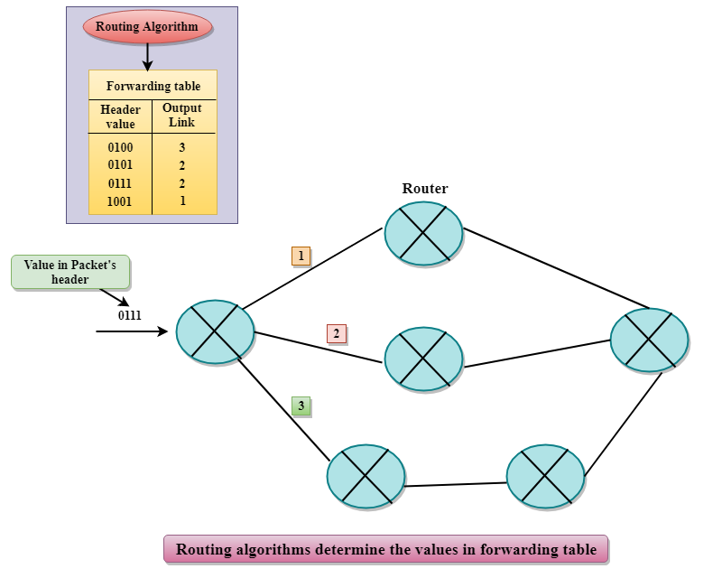

Network Layer
- The Network Layer is the third layer of the OSI model.
- It handles the service requests from the transport layer and further forwards the service request to the data link layer.
- The network layer translates the logical addresses into physical addresses
- It determines the route from the source to the destination and also manages the traffic problems such as switching, routing and controls the congestion of data packets.
- The main role of the network layer is to move the packets from sending host to the receiving host.
The main functions performed by the network layer are:
- Routing: When a packet reaches the router's input link, the router will move the packets to the router's output link. For example, a packet from S1 to R1 must be forwarded to the next router on the path to S2.
- Logical Addressing: The data link layer implements the physical addressing and network layer implements the logical addressing. Logical addressing is also used to distinguish between source and destination system. The network layer adds a header to the packet which includes the logical addresses of both the sender and the receiver.
- Internetworking: This is the main role of the network layer that it provides the logical connection between different types of networks.
- Fragmentation:The fragmentation is a process of breaking the packets into the smallest individual data units that travel through different networks.
Forwarding & Routing
In Network layer, a router is used to forward the packets. Every router has a forwarding table. A router forwards a packet by examining a packet's header field and then using the header field value to index into the forwarding table. The value stored in the forwarding table corresponding to the header field value indicates the router's outgoing interface link to which the packet is to be forwarded.
For example, the router with a header field value of 0111 arrives at a router, and then router indexes this header value into the forwarding table that determines the output link interface is 2. The router forwards the packet to the interface 2. The routing algorithm determines the values that are inserted in the forwarding table. The routing algorithm can be centralized or decentralized.

Services Provided by the Network Layer
- Guaranteed delivery:This layer provides the service which guarantees that the packet will arrive at its destination.
- Guaranteed delivery with bounded delay:This service guarantees that the packet will be delivered within a specified host-to-host delay bound.
- In-Order packets:This service ensures that the packet arrives at the destination in the order in which they are sent.
- Guaranteed max jitter: This service ensures that the amount of time taken between two successive transmissions at the sender is equal to the time between their receipt at the destination.
- Security services: The network layer provides security by using a session key between the source and destination host. The network layer in the source host encrypts the payloads of datagrams being sent to the destination host. The network layer in the destination host would then decrypt the payload. In such a way, the network layer maintains the data integrity and source authentication services.